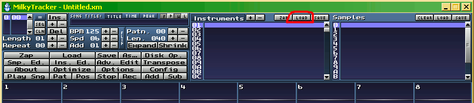
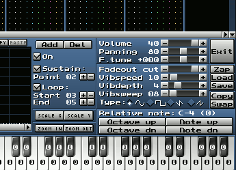

Instrumente in Milky basieren auf Samples; bis zu 16 Samples kann ein Instrument enthalten und bis zu 128 Instrumente kann
ein Song enthalten/fassen. Nun, wie verwendet man nun Samples und Instrumente in Milky? Laden Wir als Erstes ein paar fertige Instrumente.

Bild: Instrumente laden - Milkytracker
Wie im Bild gezeigt, wählt man die Position '01' in der Instrumentenliste und klickt dann auf 'LOAD' oberhalb der
Instrumentenliste. Es erscheint eine Dateiauswahlbox, in der Sie nun ein Instrument wählen können ( Dateiendung .xi ) .
Scheuen Sie sich nicht hier fleissig auch ausserhalb des Tutoriums mit Instrumenten, Samples und Songs herum zu experimentieren, denn durch
Ausprobieren erklärt sich auch einiges.
Da Instrumente meist schon gebrauchsfertig sind, nachdem sie eingeladen sind, brauche ich wohl zum laden von Instrumenten nicht viel mehr zu sagen.
Der Knopf links neben 'LOAD' , welcher 'ZAP' heisst, löscht das aktuelle Instrument (aus Milky's Speicher) und 'SAVE' ist ganz klar zum Speichern eines Instrumentes gedacht -
wird Uns noch begegnen beim Selbst erstellen von Instrumenten.
Jetzt zum Thema Samples. Samples sind die Grundlage von Instrumenten in Milky; deswegen sollte man seine Samples auch mit Bedacht wählen.
Samples laden, speichern und löschen, ist das Gleiche Spiel wie bei den Instrumenten, nur, dass man die Knöpfe oberhalb der Sampleliste wählt und nicht oberhalb der
Instrumentenliste. Wenn Sie mehr als ein Sample je Instrument brauchen oder einsetzen wollen, wählen Sie einfach weitere Positionen aus in der Sampleliste - Nicht nur
'0' , sondern auch '1', '2' usw. Ähnliches gilt für Instrumente; dort brauchen wir in der Regel mehr als eines.
Jetzt wissen Sie schon, wie man fertige Instrumente und einige Samples einläd, speichert und löscht; nur wie man selbst Samples zurecht macht und daraus ein Instrument macht, wissen Sie noch nicht.
Aber keine Sorge, wir befassen Uns gleich jetzt damit .
Es gibt zwei bis drei Wege um an Samples zu kommen:
1.) Samples von Sampling-CD's, einem Keyboard oder aus dem Internet zu verwenden; 2.) Samples mit Hilfe der Synthesefunktion in Milky zu erstellen; oder 3.) Samples schlicht selbst zu zeichnen - ja, richtig gelesen, man kann in Milky auch Samples zeichnen - lohnt sich besonders bei kurzen ChipSamples.
Aber Sie können natürlich auch jemand fragen, ob Sie seine/ihre Samples oder Instrumente nutzen dürfen.
Am Beispiel eines Chipsamples wollen Wir nun einmal die grundlegende Vorgehensweise kennen lernen, die bei Samples zu beachten ist.
Samples sind üblicherweise im WAV Dateiformat ( Endung .wav ) . Das ist das Standard-Audio-Format in Windows, neben den komprimierten WMA-Dateien.
Öffnen Sie also den Sampleeditor mit einem Klick auf 'Smp. Ed.' - Es sollte ein leeres Samplefeld zu sehen sein.
( Nebenbei gesagt, löscht man einen eingeladenen Song mit einem Klick auf 'Zap' im MilkyMenübereich - wählen Sie 'All' im Dialogfeld, nachdem Sie auf 'Zap' geklickt haben; eventuell müssen Sie auch noch
unter 'Options' wieder 'Fasttracker 2.x' im Playback Mode wählen )
Sie sehen also den leeren Sampleeditor vor sich im unteren Bereich des Milky. Klicken Sie bitte mit der rechten Maustaste
ins Samplefeld (der Bereich mit dem Strich in der Mitte) - es erscheint ein kleines Menü - wählen Sie dort bitte 'New' aus und geben '64' ein. Dann ein Klick auf 'Ok' und schon haben Wir einen kleinen Samplebereich erstellt.
Doch noch ist nichts zu hören, also klicken Sie bitte wieder mit der rechten Maustaste ins Samplefeld und wählen im kleinen Menü dann 'Generators' und eine der möglichen Wellenformen ( probieren Sie ruhig einmal alle durch, um ein Gefühl für den Klang der
einzelnen Wellenformen zu bekommen! ) . Wichtig zu wissen, ist noch, dass man erst die Wellenform mit der PC-Tastatur spielen kann, wenn man auch 'Forward' oder 'Ping-pong' ausgewählt hat unter 'No loop'
Auch das Zeichnen von Wellenformen ist, mit etwas Übung, nicht sonderlich schwer. Klicken Sie bitte auf den Knopf namens 'Draw' ( unter 'Vol' ) .
Nun können Sie eine beliebige Wellenform ins Samplefenster zeichnen - Sie wird auf die Note C gestimmt sein, wenn sie '64' als Samplegrösse gewählt hatten - Siehe 'Length', dort muss '40' stehen - 40 ist hexadezimal und entspricht einer dezimalen 64. Vergessen
Sie nicht, wieder eine Forward oder Ping-pong loop einzustellen, sonst hören Sie nur ein Klicken und keinen andauernden Ton.
Nun haben Wir also schon ein paar rohe Chipsamples erstellt gehabt. Jetzt machen Wir ein Instrument daraus.
Bitte klicken Sie auf 'Ins. Ed.' - Es öffnet sich der Instrumenteneditor. Klicken Sie dort, nachdem ein Sample, samt Loop, erstellt ist, auf
'0' bei 'Predef.' ( rechts neben 'Panning' ) - Aha, Wir haben nun eine sogenannte 'Hüllkurve' erstellt, also einen Lautstärkeverlauf, welcher aber noch nicht zu hören ist.
Sobald Wir Uns an das Thema 'Song erstellen' begeben, werden Wir auch mit Hüllkurven arbeiten und sehen, wie sie wirken.

Bild: Instrumenteneinstellungen
Stellen Sie nun bitte, wie im Bild gezeigt, 'Vibspeed' auf '10' ( Achtung Hexadezimal ), 'Vibdepth' auf '4' und eventuell 'Vibsweep' auf '8'.
Nun 'leiert' unser Klang etwas, was auch Vibrato genannt wird in der Musik.
Klingt ja schon nicht übel, oder? Dann wollen Wir Uns mal an einen ersten kleinen Song wagen: Bitte klicken Sie auf
'Beispielsong erstellen' im Tutoriums Menü oder auf weiter...